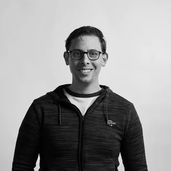
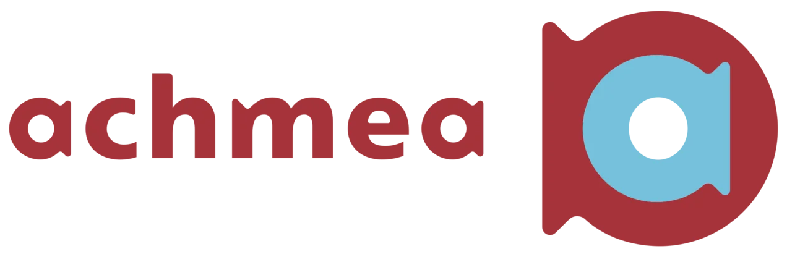
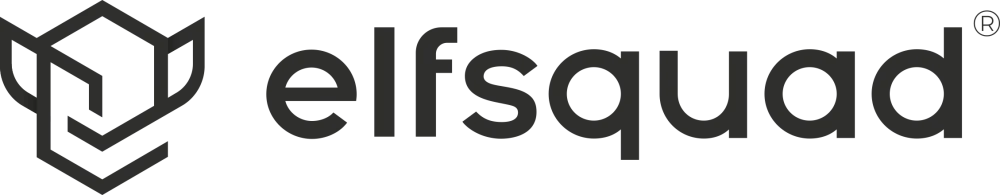

01 — BEGRIJPEN
Helderheid
Waar zitten de échte kansen en risico's? Eerst de situatie scherp, dan pas oplossingen.
Onafhankelijk technisch advies · Software · AI · Automatisering
Van technische onzekerheid naar heldere keuzes, scherpe prioriteiten en uitvoerbare stappen. Geen hype, geen jargon, geen PowerPoint-theater.
Jeffrey Brocx — Lead Developer & technisch adviseur
Eerst begrijpen · dan prioriteren · dan uitvoeren01 — HERKEN JE DIT?
Veel ideeën over AI — maar geen concrete prioriteit.
Handmatig, repetitief werk dat maar blijft terugkomen.
Software die organisch groeide — en niemand weet meer waar te beginnen.
Een offerte van een leverancier, maar geen onafhankelijke toets.
Behoefte aan senior technisch oordeel — zonder fulltime CTO.
Geld dat lekt via duizend kleine inefficiënties die niemand ziet.
02 — DE AANPAK
Waar zitten de échte kansen en risico's? Eerst de situatie scherp, dan pas oplossingen.
Wat eerst, wat later, en wat je juist níét moet doen. Impact tegen moeite, eerlijk afgewogen.
Concrete vervolgstappen voor de korte en middellange termijn. Geen dik rapport — wel richting.
03 — WAAROM MIJ

Tien jaar .NET en Azure. Software gebouwd voor honderdduizenden gebruikers in zorg, media en verzekeringen. Vandaag Lead Developer in een operationeel MKB-bedrijf — ik ken het verschil tussen een mooie architectuurplaat en wat er maandagochtend écht moet werken.
Mijn achtergrond bij de Koninklijke Marine maakte me gestructureerd, kalm en security-bewust. Ik praat met directie én developers in hun eigen taal — en ik adviseer ook tegen werk dat ik zelf zou kunnen factureren.


04 — HOE IK WERK
AI is geen doel. Automatisering is geen doel. Cloud is geen doel. De vraag is altijd: welk probleem lossen we op, welke waarde ontstaat er, en welke risico's brengt het mee?
Geen standaardoplossing voordat de context helder is. Elke organisatie heeft bestaande systemen, mensen en politieke werkelijkheid. Die negeren is hoe je plannen krijgt die niemand uitvoert.
Architectuur is geen academische oefening. Goede architectuur helpt om sneller, veiliger en betrouwbaarder resultaten te halen — anders is het versiering.
Achteraf repareren is duurder dan vooraf nadenken. Zeker als je AI of automatisering boven op processen wil zetten die intern nog niet op orde zijn.
Niet alles wat technisch kan, verdient budget. De optie "voorlopig niets" leg ik ook op tafel — ook als ik het werk zelf zou kunnen doen.
05 — CONTACT
Eén bericht is genoeg. Vertel kort wat er speelt — dan denk ik vrijblijvend mee of, en waar, ik kan helpen.